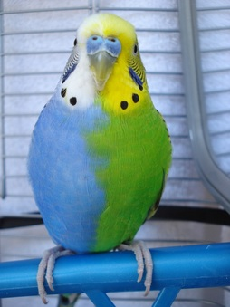

Как научить попугая говорить
Если в клетке живут два и более попугаев, то их следует разделить и изолировать друг от друга например положив на клетки любую ткань, главное чтобы при этом чтобы они не общались друг с другом. Даже если вы научите разговаривать одного попугая, велика вероятность того, что он научит разговаривать второго.
Если вы хотите, чтобы обучение принесло результаты, попугай должна вам полностью доверять и быть ручным, то есть занятия стоит проводить с того момента, как он станет спокойно садиться вам на палец. 
2). Длительность занятия должна быть не менее 15 минут, + хорошее занятие в неделю 40-50 минут. В идеале нужно в течение суток повторять урок 3 раза. Начинайте обучение с самых простых слов. Лучше, если это будет небольшая фраза, например : "Свободу попугаям". Легче всего учить с помощью магнитофона и записанной на него фразы. Следует учитывать наиболее понятные для восприятия попугаями звуки, гласные а и о, из согласных – т, р, п, к.
3) Смотрите чтобы попугай не на что не отвлекается во время занятий и не засыпал.
4) Повторяйте вашу фразу перед утренним кормлением громко и внятно. Первые слова обычно даются особенно трудно, но затем способности развиваются все больше и больше.
5) Каким простым словам научить: Входя в комнату говорите «Привет!», а выходя – «Пока!». При общении с гостями при питомце, говорите им «Привет!», «Как дела?», «Входи!», и он быстро выучит эти фразы. Постоянно общайтесь с вашим попугаем и говорите ему простые фразы подтверждённые в примерах.
Возможно некоторые из вас не знают, но попугаев также как и собак, можно научить выполнять команды: - подойди, принеси, кувырок. При обучении трюкам в качестве награды нужно будет использовать маленькие кусочки любимого лакомства попугая. Награждайте вашу птичку быстро и последовательно. Обучайте трюкам постепенно начиная с простого подойди или принеси.
При выполнении трюка подойди, хозяин должен поместить палец перед попугаем и сказать «Подойди». Если попугай не реагирует, можно использовать лакомство, чтобы привлечь его внимание, хозяин должен поместить лакомство перед попугаем и сказать: «Подойди». Если попугай слушается, ему дается лакомство.
Желаем удачи в этом интересном деле, обучении любимых питомцев!